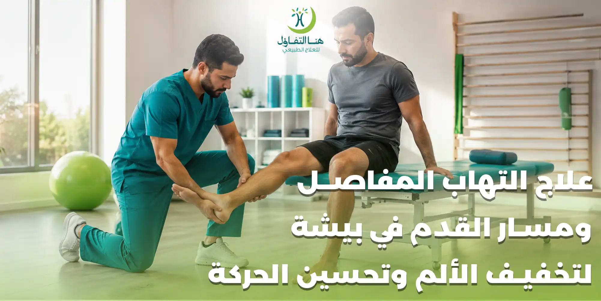

يمكن أن تؤثر التهابات المفاصل وآلام القدم على الحركة بصورة واضحة، خصوصًا عندما يصاحبها تورم أو تيبس أو ألم أثناء المشي والوقوف. وقد يضطر الشخص إلى تقليل نشاطه اليومي بسبب الألم، مما قد يؤدي مع الوقت إلى ضعف العضلات وتراجع القدرة على الحركة.
وتختلف أسباب آلام المفاصل والقدم من حالة إلى أخرى، لذلك فإن التعامل معها يبدأ بتحديد طبيعة المشكلة والعوامل التي تزيد الأعراض، ثم اختيار البرنامج العلاجي والتأهيلي المناسب.
يمكن أن يكون العلاج الطبيعي جزءًا من خطة التعامل مع بعض مشكلات المفاصل والقدم، بهدف تحسين الحركة وتقوية العضلات واستعادة القدرة على أداء الأنشطة اليومية بصورة أفضل.
علاج التهاب المفاصل في بيشة
التهاب المفاصل قد يظهر في صورة ألم أو تورم أو تيبس أو صعوبة في تحريك المفصل، وقد تختلف الأعراض حسب نوع الالتهاب والمفصل المتأثر.
وقد يشعر المريض بالألم أثناء:
- المشي.
- صعود الدرج.
- الوقوف لفترات طويلة.
- تحريك المفصل.
- ممارسة الأنشطة اليومية.
- بعد فترات طويلة من عدم الحركة.
ولا يمكن التعامل مع جميع حالات التهاب المفاصل بالطريقة نفسها، لذلك من المهم معرفة سبب الالتهاب وطبيعته قبل تحديد البرنامج العلاجي.
علاج آلام المفاصل والقدم
قد يكون ألم القدم مرتبطًا بالمفصل نفسه أو بالعضلات والأوتار أو بطريقة المشي والحركة، ولذلك يحتاج التقييم إلى النظر إلى المنطقة بصورة متكاملة.
وقد يشمل التقييم:
- مكان الألم.
- شدة الألم.
- وجود تورم.
- مدى حركة المفصل.
- قوة العضلات.
- طريقة المشي.
- قدرة الشخص على تحميل الوزن على القدم.
- الأنشطة التي تزيد الأعراض.
وبناءً على ذلك يمكن تحديد ما إذا كان الشخص يحتاج إلى جلسات علاج طبيعي أو برنامج تأهيلي أو تقييم طبي إضافي.
التهاب مفصل القدم وتأثيره على المشي
عندما يكون أحد مفاصل القدم مؤلمًا أو متيبسًا، قد يبدأ الشخص في تغيير طريقة المشي بصورة لا إرادية لتجنب الألم.
وقد يؤدي ذلك إلى تحميل زائد على مناطق أخرى من القدم أو الساق.
ولهذا فإن التأهيل لا يركز فقط على مكان الألم، وإنما يهتم أيضًا بطريقة الحركة والتحميل والتوازن.
ويهدف البرنامج المناسب إلى مساعدة الشخص على استعادة حركة أفضل وتقليل العوامل التي تزيد الضغط على المفصل.
تورم المفاصل وألم القدم
يمكن أن يصاحب بعض حالات التهاب المفاصل تورم في المنطقة المصابة، وقد يؤدي التورم إلى زيادة صعوبة الحركة.
تنبيه:
وفي حالة وجود تورم مفاجئ أو شديد، أو احمرار وسخونة واضحة في المفصل، أو ألم شديد غير معتاد، يجب الحصول على تقييم طبي لتحديد السبب قبل البدء في أي برنامج علاجي.
أما الحالات التي تم تقييمها طبيًا وأصبح العلاج الطبيعي مناسبًا لها، فقد يتضمن البرنامج تمارين وحركة تدريجية وفق طبيعة الحالة.
العلاج الطبيعي لآلام المفاصل
يمكن أن يساعد العلاج الطبيعي في بعض حالات آلام المفاصل على تحسين القدرة الحركية وتقوية العضلات المحيطة بالمفصل.
تمارين الحركة
للحفاظ على مدى الحركة وتقليل التيبس بحسب قدرة المفصل.
تمارين القوة
لتقوية العضلات الداعمة للمفصل وتحسين القدرة على الحركة.
تمارين التوازن
خصوصًا عندما يكون الألم أو ضعف العضلات مؤثرًا على الثبات.
التدريب الوظيفي
لتسهيل الأنشطة اليومية مثل المشي والوقوف وصعود الدرج.
التثقيف الحركي
لمساعدة المراجع على فهم الحركات والوضعيات التي قد تزيد الأعراض وكيفية تعديل النشاط.
علاج تيبس المفاصل في بيشة
قد يكون تيبس المفصل من أكثر الأعراض التي تجعل الحركة اليومية صعبة.
وقد يشعر الشخص بصعوبة في تحريك القدم أو الركبة أو الكاحل بعد الاستيقاظ أو بعد الجلوس لفترة طويلة.
وتساعد الحركة المناسبة والتمارين التي يحددها المختص على الحفاظ على مدى حركة المفصل وتحسين القدرة على استخدامه.
لكن التمارين يجب أن تتناسب مع سبب التيبس، لأن وجود التهاب نشط أو إصابة أو تورم شديد قد يحتاج إلى طريقة مختلفة في التعامل.
تقوية عضلات القدم والساق
عندما يستمر ألم القدم لفترة طويلة، قد يقلل الشخص من نشاطه لتجنب الألم، ومع قلة الحركة يمكن أن تضعف العضلات.
وقد يؤثر ضعف العضلات على:
- المشي.
- التوازن.
- صعود الدرج.
- الوقوف.
- القدرة على ممارسة الرياضة.
لذلك قد تكون تقوية عضلات القدم والساق جزءًا من برنامج التأهيل عندما تكون مناسبة للحالة.
ويتم التدرج في التمارين بحسب مستوى القوة والألم والقدرة على تحمل الحركة.
علاج صعوبة المشي بسبب آلام المفاصل
قد تجعل آلام المفاصل الشخص يمشي بطريقة مختلفة لتقليل الضغط على المنطقة المؤلمة.
ومع استمرار هذه الطريقة قد تتغير طريقة توزيع الوزن والحركة بين القدمين والساقين.
لذلك قد يتضمن التأهيل تدريبًا على الحركة والمشي، مع التركيز على تحسين القدرة الوظيفية وتقليل التعويضات الحركية غير المناسبة.
آلام القدم وتأثيرها على النشاط اليومي
قد يبدو ألم القدم مشكلة بسيطة، لكنه يمكن أن يؤثر على الكثير من التفاصيل اليومية.
مثل:
- • المشي لمسافات طويلة.
- • الوقوف أثناء العمل.
- • التسوق.
- • صعود الدرج.
- • ممارسة الرياضة.
- • الخروج والتنقل.
- • أداء الأعمال المنزلية.
ولهذا فإن الهدف من العلاج لا يكون مجرد التعامل مع الألم، وإنما استعادة القدرة على الحركة والعودة إلى النشاط اليومي بصورة أفضل.
علاج ألم مفصل الركبة والقدم
في بعض الحالات قد يكون ألم القدم مصحوبًا بمشكلة في الركبة أو الساق، خصوصًا عندما تتغير طريقة المشي بسبب الألم.
فالجسم يعمل كوحدة حركية مترابطة، وأي تغيير في تحميل القدم قد يؤثر على الركبة والساق.
وهذا يساعد على تكوين صورة أكثر شمولًا عن المشكلة.
التهاب المفاصل والحركة
قد يدفع الألم الشخص إلى تجنب الحركة، لكن قلة النشاط لفترات طويلة قد تؤدي إلى ضعف العضلات وتراجع القدرة البدنية.
لذلك، عندما تسمح حالة المفصل بذلك، يمكن أن تكون الحركة التدريجية جزءًا من برنامج التأهيل.
والهدف ليس إجبار المفصل على الحركة رغم الألم، وإنما تحديد مستوى مناسب من النشاط يمكن زيادته تدريجيًا وفق استجابة الحالة.
هل كل ألم في القدم سببه التهاب المفاصل؟
لا.
ألم القدم يمكن أن ينتج عن أسباب مختلفة، منها مشكلات المفاصل أو العضلات أو الأوتار أو الأربطة أو الأعصاب أو الإصابات.
ولهذا لا يفضل الاعتماد على وصف الألم وحده لتحديد السبب.
إذا استمر الألم أو تكرر أو صاحبه تورم أو صعوبة واضحة في المشي، فمن الأفضل الحصول على تقييم متخصص لمعرفة السبب.
متى تحتاج آلام المفاصل إلى تقييم متخصص؟
يفضل تقييم آلام المفاصل عندما:
- يستمر الألم لفترة طويلة.
- يتكرر الألم بصورة مستمرة.
- يؤثر على المشي.
- توجد صعوبة في تحريك المفصل.
- يظهر تورم متكرر.
- تقل القدرة على أداء الأنشطة اليومية.
- توجد إصابة سابقة.
- يزداد الألم تدريجيًا.
تنبيه:
أما التورم المفاجئ والشديد أو الاحمرار والسخونة الواضحة في المفصل مع ألم شديد، فقد تحتاج إلى تقييم طبي سريع.
علاج التهاب المفاصل بالعلاج الطبيعي
العلاج الطبيعي لا يكون بديلًا عن التشخيص الطبي أو الأدوية التي يصفها الطبيب عند الحاجة، لكنه قد يكون جزءًا من الخطة التأهيلية المناسبة لبعض الحالات.
وقد يركز على تحسين:
- • قوة العضلات.
- • مرونة المفصل.
- • التوازن.
- • المشي.
- • القدرة على الحركة.
- • تحمل الأنشطة اليومية.
ويتم اختيار التمارين وفق حالة الشخص ومرحلة المشكلة.
تمارين المفاصل ودورها في التأهيل
قد تتضمن برامج التأهيل تمارين مختلفة حسب المفصل المتأثر.
تحسين مدى الحركة
للحفاظ على قدرة المفصل على الحركة.
تقوية العضلات
لدعم المفصل وتحسين القدرة الوظيفية.
تحسين التوازن
لتقليل عدم الثبات أثناء الحركة.
تحسين التحمل
لمساعدة الشخص على العودة إلى النشاط تدريجيًا.
ولا توجد مجموعة تمارين واحدة تناسب جميع حالات التهاب المفاصل، لذلك يجب اختيارها وفق التقييم.
علاج ألم الكاحل والقدم
الكاحل من المفاصل المهمة في عملية المشي وتحمل وزن الجسم.
وعندما يكون الكاحل مؤلمًا أو متيبسًا، قد يتغير أسلوب المشي، وقد يصبح الشخص أقل قدرة على المشي لمسافات طويلة.
وقد يركز التأهيل على تحسين:
- • حركة الكاحل.
- • قوة عضلات الساق.
- • التوازن.
- • القدرة على تحميل الوزن.
- • طريقة المشي.
ويتم تحديد البرنامج بناءً على السبب الأساسي للألم.
إعادة تأهيل القدم بعد الإصابة
إذا كان ألم القدم أو المفصل ناتجًا عن إصابة سابقة، فقد يحتاج الشخص إلى برنامج تأهيلي لاستعادة الحركة والقوة والتوازن.
ويختلف التدرج حسب نوع الإصابة ومرحلة التعافي.
العلاج الطبيعي للقدم في بيشة
يمكن أن يكون العلاج الطبيعي خيارًا مناسبًا لبعض الأشخاص الذين يعانون من مشكلات في القدم أو الكاحل أو المفاصل عندما تكون الحالة مناسبة للتأهيل.
ويبدأ البرنامج بتقييم المشكلة، ثم تحديد الأهداف التي يحتاج إليها المراجع.
وقد يكون الهدف مثلًا:
- • تقليل الألم.
- • تحسين المشي.
- • استعادة الحركة.
- • تقوية العضلات.
- • تحسين التوازن.
- • العودة إلى النشاط.
أهمية تقوية العضلات مع آلام المفاصل
قد تؤدي قلة الحركة إلى ضعف العضلات، وضعف العضلات بدوره قد يجعل بعض الأنشطة أكثر صعوبة.
ولهذا فإن استعادة القوة العضلية بشكل تدريجي يمكن أن تساعد على تحسين القدرة الوظيفية.
لكن لا يعني ذلك استخدام أوزان ثقيلة أو تمارين شديدة من البداية.
البرنامج المناسب يبدأ من مستوى قدرة الشخص ثم يتطور تدريجيًا.
آلام المفاصل وممارسة الرياضة
وجود ألم في المفاصل لا يعني بالضرورة التوقف عن جميع الأنشطة.
لكن نوع الرياضة وشدتها يجب أن يتناسبا مع حالة المفصل.
وقد تكون بعض الأنشطة منخفضة التأثير أكثر ملاءمة لبعض الأشخاص، بينما قد تحتاج الأنشطة التي تتضمن قفزًا أو تحميلًا مرتفعًا إلى تعديل أو تأجيل حتى تتحسن القدرة على الحركة.
والأفضل هو تحديد النشاط المناسب وفق حالة الشخص وأهدافه.
كيف يساعد التأهيل على العودة للحركة؟
التأهيل يركز على الانتقال من مرحلة الألم وصعوبة الحركة إلى أداء الأنشطة بصورة أكثر سهولة.
↓
تحديد سبب المشكلة والعوامل المؤثرة
↓
تحسين الحركة والمرونة
↓
تقوية العضلات
↓
تحسين التوازن والمشي
↓
العودة التدريجية للنشاط
ولا تسير جميع الحالات بالسرعة نفسها، لذلك يتم تعديل البرنامج حسب الاستجابة.
علاج آلام المفاصل لدى كبار السن
قد تترافق آلام المفاصل لدى كبار السن مع ضعف عضلي أو انخفاض في التوازن، وهو ما يجعل التأهيل أكثر أهمية للحفاظ على القدرة على الحركة.
وقد يركز البرنامج على:
- • تقوية العضلات.
- • تحسين التوازن.
- • تحسين المشي.
- • الحفاظ على مدى الحركة.
- • زيادة الثقة أثناء الحركة.
- • تقليل خطر السقوط.
ويتم اختيار مستوى التمرين وفق الحالة الصحية والقدرة البدنية.
أهمية التقييم قبل جلسات العلاج الطبيعي
ليس كل ألم في القدم أو المفصل يحتاج إلى نفس البرنامج.
ولهذا يهتم المختص قبل بدء الجلسات بمعرفة:
- مكان الألم.
- مدة المشكلة.
- وجود إصابة.
- درجة الحركة.
- قوة العضلات.
- وجود تورم.
- طريقة المشي.
- الأنشطة التي تزيد الألم.
وبعد ذلك يمكن تحديد الخطة المناسبة والأهداف التي يسعى البرنامج إلى تحقيقها.
ماذا يحدث خلال جلسة علاج المفاصل؟
قد تبدأ الجلسة بتقييم الحركة والألم، ثم يتم تطبيق الأساليب العلاجية أو التمارين المناسبة للحالة.
وقد يتضمن البرنامج تمارين للحركة أو القوة أو التوازن أو التدريب الوظيفي.
كما يمكن أن يحصل المراجع على تعليمات وتمارين منزلية تساعده على الاستمرار في البرنامج بين الجلسات.
متى يجب عدم ممارسة التمارين بشكل عشوائي؟
إذا كان هناك ألم شديد، تورم مفاجئ، إصابة حديثة، احمرار وسخونة واضحة في المفصل، أو صعوبة كبيرة في تحميل الوزن، فمن الأفضل تقييم الحالة قبل البدء في التمارين.
كما أن الألم الناتج عن مشكلة مشخصة لا يعني أن جميع التمارين ستكون مناسبة.
تنبيه:
لذلك يفضل أن تكون التمارين جزءًا من برنامج مخصص بدل الاعتماد على مقاطع عشوائية من الإنترنت.
كيف تحافظ على صحة المفاصل؟
يمكن لبعض العادات أن تساعد في دعم صحة المفاصل والحفاظ على القدرة الحركية، ومنها:
- • المحافظة على النشاط البدني المناسب.
- • تقوية العضلات تدريجيًا.
- • تجنب الخمول لفترات طويلة.
- • الاهتمام بالوزن الصحي.
- • استخدام أحذية مناسبة للنشاط.
- • تجنب الزيادة المفاجئة في المجهود.
- • الحصول على تقييم عند استمرار الألم.
هذه العادات لا تمنع جميع مشكلات المفاصل، لكنها تساعد على دعم الحركة والقدرة البدنية.
علاج التهاب المفاصل ومسار القدم في بيشة
تحتاج آلام المفاصل والقدم إلى التعامل معها بناءً على السبب، لأن الألم قد يكون ناتجًا عن التهاب أو إصابة أو مشكلة عضلية أو وترية أو غيرها.
ويمكن أن يكون العلاج الطبيعي والتأهيل جزءًا من الخطة المناسبة لبعض الحالات بهدف تحسين الحركة وتقوية العضلات واستعادة القدرة على المشي والنشاط.
ويتم تحديد البرنامج وفق احتياجات المراجع ومرحلة حالته.
أسئلة شائعة عن علاج التهاب المفاصل وآلام القدم في بيشة
ما أفضل علاج لالتهاب المفاصل؟
يعتمد العلاج على نوع الالتهاب والمفصل المتأثر وشدة الأعراض، وقد يتضمن العلاج الطبي والعلاج الطبيعي والتأهيل بحسب الحالة.
هل العلاج الطبيعي يساعد في آلام المفاصل؟
يمكن أن يساعد العلاج الطبيعي في بعض الحالات على تحسين الحركة والقوة والقدرة على أداء الأنشطة اليومية.
هل التهاب المفاصل يسبب صعوبة في المشي؟
يمكن أن يؤدي الألم والتيبس والتورم إلى صعوبة في المشي، خصوصًا عندما تتأثر مفاصل القدم أو الكاحل أو الركبة.
هل يمكن علاج ألم القدم بالعلاج الطبيعي؟
يمكن أن يكون العلاج الطبيعي مناسبًا لبعض أسباب ألم القدم والكاحل، لكن تحديد ملاءمته يعتمد على سبب الألم.
هل تقوية العضلات تساعد على تحسين الحركة؟
نعم، تقوية العضلات قد تساعد على تحسين القدرة الوظيفية والتوازن والحركة، عندما تكون التمارين مناسبة للحالة.
هل أستطيع ممارسة الرياضة مع التهاب المفاصل؟
يمكن لبعض الأشخاص ممارسة أنشطة بدنية مناسبة، لكن نوع النشاط وشدته يجب أن يتناسبا مع حالة المفصل والأعراض.
هل كل تورم في المفصل بسبب التهاب المفاصل؟
لا. التورم قد ينتج عن أسباب مختلفة، لذلك يحتاج التورم المستمر أو المفاجئ إلى تقييم لمعرفة السبب.
كم جلسة علاج طبيعي أحتاج لآلام المفاصل؟
لا يوجد عدد ثابت للجلسات، حيث يختلف البرنامج حسب سبب المشكلة وشدتها واستجابة المراجع للعلاج.
متى أحتاج إلى الطبيب بسبب ألم القدم؟
إذا كان الألم شديدًا أو ظهر بشكل مفاجئ، أو كان مصحوبًا بتورم شديد أو احمرار وسخونة أو عدم القدرة على تحميل الوزن، فمن الأفضل الحصول على تقييم طبي.
هل الراحة التامة مفيدة لآلام المفاصل؟
ليس دائمًا. يعتمد مستوى الراحة والنشاط على سبب الألم، وقد تكون الحركة التدريجية المناسبة جزءًا من التأهيل في العديد من الحالات.
هل يمكن تقوية عضلات القدم والساق أثناء وجود الألم؟
قد تكون تمارين التقوية مناسبة لبعض الحالات، لكن يجب تحديد نوع التمرين وشدته وفق سبب الألم وقدرة الشخص على الحركة.
احجز استشارتك في مركز هنا التفاؤل ببيشة
إذا كان ألم المفاصل أو القدم يؤثر على المشي والحركة والأنشطة اليومية، فإن التقييم المتخصص يساعد على فهم طبيعة المشكلة وتحديد البرنامج المناسب بدل التعامل مع الألم بصورة عشوائية. ويمكن أن يكون العلاج الطبيعي والتأهيل جزءًا من خطة التعامل مع الحالات المناسبة، مع التركيز على تحسين الحركة وتقوية العضلات والتوازن واستعادة القدرة على النشاط تدريجيًا.